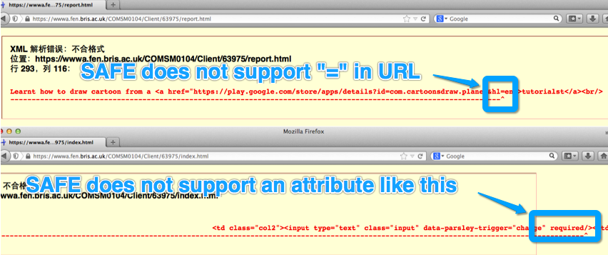

Project Report (Client)
I haven't do CSS and Javascript developing before and game developing aslo. This is a great chance for me to learn these technologies. In order to learn those new languages, I haven't use any third party libraries and frameworks. All logic and styles were managed by Javascript and CSS only, and all codes were developed by myself.
Contents
- XHTML5 webpage (spent 16 hours)
- XHTML5
- Mobile devices consideration
- Favicon
- All involved tabs
- HTML + CSS
- IE9 supported
- Handling HTML reserved characters
- CSS3
- CSS inheritance
- Layout and mobile devices consideration
- Multi styles for links(for different status)
- Units
- Main CSS styles
- Form
- Video
- Game (spent 200 hours)
- Development Environment
- Testing
- SAFE Error Handling
- Google Cloud
1, XHTML5 webpage (spent 20 hours)
1.1, XHTML5
This XHTML5 section was developed by using XHTML5 + CSS3. The main technology solutions were learnt from an online tutorial Except XHTML5 basic functionalities, there are several features will be highlighted below:1.1.1 Mobile devices consideration.
Mobile devices were supported by meta tag which was learnt from an online post. Small screen also was considered, a mobile layout also managed by CSS, that will be illustrated in the CSS section.1.1.2 Favicon.
Favicon is a browser sensitive feature. The solution of this project was learnt from http://en.wikipedia.org/wiki/Favicon. After researched online, most posts mentioned that “.icon” image is recommended format. However the ".icon" image which generated by GIMP was not recognized. So this project used png format for the favicon.1.1.3 All involved tabs:
1.1.4 HTML + CSS
All XHTML elements displayed on this webpage were created by HTML tags but the layout was managed by CSS.
1.1.5 IE9 support
For IE9's html5 supporting, a part of xml was added into XHTML file:<!--[if lt IE 9]> <script src="https://oss.maxcdn.com/libs/html5shiv/3.7.0/html5shiv.js"></script> <script src="https://oss.maxcdn.com/libs/respond.js/1.3.0/respond.min.js"></script> <![endif]-->
1.1.6 Handling HTML reserved characters
In this the project report, nembers of code segments were displayed. However, there were several HTML reserved characters in code segments. To display them, "<" and ">" were replaced by < >. Addtionally, to display ">", it was wrote as "(and sign)amp;gt".1.2, CSS3
CSS plays the significant role in this project. It was used to add styles and control layouts. Several technology solutions will be highlighted in this report:1.2.1 CSS inheritance
CSS inheritance is commonly recognized as sub tags inheriting styles from parent tags (more explanations). However, a CSS style inherits from another CSS style was expected in this project. For example corner radius styles were boardly used styles for all containers. Without CSS inheritance, developers have to copy styles into other CSS sectors. But there will be a lot of copies in CSS files. If a setting need to be changed, that change needs to be implemented into all places. Therefore a CSS inheritance feature was needed.The CSS inheritance mechanism was expected work as this:
.rounded_corners {
-moz-border-radius: 8px;
-webkit-border-radius: 8px;
border-radius: 8px;
}
#header {
.rounded_corners; /* header inherits rounded corners styles */
}
#footer {
.rounded_corners; /* header inherits rounded corners styles */
}
After research, there were three solutions: Solution 1:
Creating a base style and appling to HTML tags. However, this was not a real inheritance solution.<article class='content rounded_corners'>
Solution 2:
Overriding existing styles. Nevertheless, the base styles were only able to be shared to one sub CSS sector with same name.
.topcontent {
border-radius : 5px;
-moz-border-radius : 5px;
-webkit-border-radius : 5px;
}
.topcontent {
background-color: #FFF;
}
Solution 3:
Firstly, coding CSS files and adding extendsion and inheritance. Subsequently, using preprocess application to process CSS files. There were several preprocess applications: less and sassAfter considering of all solutions, this project didn't adopt any of them. The final solution was making copies.
1.2.2 Layout and mobile devices consideration
As this report mentioned above, CSS was used for controling the layout of this project. This project was designed for adapting different size of browsers, below diagram shows the layout design: The thinner layout was designed for smaller screen devices such as mobiles. "@media" was the CSS tag was the mainly technology which was used for adapting screen sizes. This tag offers an alternative CSS style settings if users' screen is smaller than specific size. Base on this technology, this project was able to offer mobile styles control ability.
@media only screen and (max-width: 480px) and (min-width: 150px){ }
All styles in @media will be activated when the screen smaller than 480px. All CSS were used for overriding the default styles.
For example, below styles were used for making navigations to display vertically. It only overrided partial CSS styles, but still keep other styles, such as coner radius.
@media only screen and (max-width: 480px) and (min-width: 150px){
.body{
width: 90%;
font-size:95%;
}
.mainHeader img{
width : 100%;
}
.mainHeader nav{
height:160px;
}
.mainHeader nav ul {
/*height:100%;*/
padding-left:0;
}
.mainHeader nav ul li{
width:100%;
text-align:center;
}
.mainHeader nav a:link,.mainHeader nav a:visited{
padding:10px 25px;
display:block;
}
}
1.2.3 Multi styles for links(for different status)
“a:link” for the style of a normal link, “a:visited” for a clicked link, “a:hover” for links mouse over. For example:
.mainHeader nav a:link,.mainHeader nav a:visited{
color:#FFF;
display: inline-block;
padding:10px 25px;
height: 20px;
}
.mainHeader nav a:hover, .mainHeader nav a:active,
.mainHeader nav .active a:link, .mainHeader nav .active a:visited{
background-color:#CF5C3F;
text-shadow: none;
}
1.2.4Units
Px is a commonly used units on web page design. Px depends on the screen's resolution, it provides good across platforms ability. But it is not recommended to use, because the text doesn't scale when the visitor changes the default text size. "em" and percentage were widely used units in this project. 1em = 100% = current font size. By default, 1em equals 16px. To avoid use px directly, “font-size : 87.5%;” was used to control the font size. If “font-size = 87.5%”, then 1em = 16px * 87.5%.1.2.5Main CSS styles:
background-color: #FFF; /*background color*/ border-radius : 5px; /*border coner radius*/ -moz-border-radius : 5px; /* for firefox*/ -webkit-border-radius : 5px; /* for webkit*/ padding : 3% 5%; /* padding top=bottom margin-top : 2%;Abouve CSS were used to control styles of corner radius, margins and paddings. To adapt to different browsers, corner radius were set by several settings for different browsers separately.
Padding and margin were boardly used in this project for controling the layout. Padding was used to control the space from the boundary to inset contents. Margin was use to control the space out of the boundary. Margin and padding both accept below settings:
margin:10px 5px 15px 20px;
/*
top margin is 10px
right margin is 5px
bottom margin is 15px
left margin is 20px
*/
margin:10px 5px 15px;
/*
top margin is 10px
right and left margins are 5px
bottom margin is 15px
*/
margin:10px 5px;
/*
top and bottom margins are 10px
right and left margins are 5px
*/
margin:10px;
/*
all four margins are 10px
*/
padding-top:2em; /*Specific top padding */ padding-left:2em; /*Specific left padding */ padding-right:2em; /*Specific right padding */ padding-bottom,:2em; /*Specific bottom padding */Regarding Font, below are the global settings for text styles.
body{ /*basic style*/
color : #000305; /*text colour*/
font-size : 87.5%; /* the base font is 14px*/ /*relative units */
font-family: Arial,"Liberation Sans",sans-serif;
/*Arial is a Windows font, therefore i supply different fonts.*/
line-height: 1.5;
text-align: left;
background-color:#CCCCCC;
}
1.3, Form
1.3.1,HTML form
This project has a HTML form. This form's layout was managed by a table. Date fields' name located in the first columns and all HTML input tags located in the second columns.
1.3.2,Validation
Parsleyjs was adopted in this project. Parsleyjs is a very simple Javascript library, To add this ability into a HTML web page, developers can simply add "data-parsley-validate" into "form" tags."required" is used for configurating a compulsion field.
"type="email"" is used for setting a email field, this field will be validated as an email address.
<form id="demo-form" data-parsley-validate> <input type="password" name="password" class="input" required/>
1.3,Video
This project also embeded a video for demostrating video capbility.HTML5 offers video features by:
<video width="320" height="240" controls> <source src="movie.mp4" type="video/mp4"> <source src="movie.ogg" type="video/ogg"> </video>New browsers support HTML5 video element, but old browsers such as IE8 does not support. Alternatively, Flash player is a commonly used video solution. Recognizing browsers' supporting and offering Flash for playing was a panic issue for developers. However, Youtube has already solved that. Developers can upload videos onto Youtube, and embed the vedio into their websit by:
<iframe class="video" src="//www.youtube.com/embed/DhLNO3XlbJs" frameborder="0" allowfullscreen></iframe>Youtube will use the proper video player to play the video. Addtionaly, Youtube offers a web page to users for setting video players.
 Once users set "Requet HTML5 player" all videos from Youtube will be played by HTML5 video player.
Once users set "Requet HTML5 player" all videos from Youtube will be played by HTML5 video player.
2, Game (spent 200 hours)
The basic knowledges were learnt from a Youtube video. In the following sections, this report will illustrate in which aspects the project enhanced the game after learnt from the video.2.1, Drawings
2.1.1 Tutorials
Learnt how to draw cartoon from a tutorialstLearnt to use inkscape from a tutorialst
2.1.2 Jet
Firstly, drawing sketch by inkscape:

Secondly, filling colours by GIMP

2.1.3 Enemy jet
 Antialias learnt from a tutorialst
Antialias learnt from a tutorialst
2.1.4 Bullet
First, create a blank layer and draw blend colour. Then, use "Fuzzy select tool" to select the bullet in bullet layer. Subsequently, select blend layer in the layer view and use "ctrl + c" to copy. Finally, paste into a new file which has transparent background.
2.1.5 Explosing
2.1.6 Background
Regarding drawing background, the drawing was learnt from a tutorials.One thing worth to mention was deleting segment of lines in Inkscape was difficult. It was solved by drawing "brush strokes" and “cut path”
 Colours were filled by GIMP. Sunshine was created by "smudge tool". Airbrush was used to create shadow and "pencil tool" was used to change the drawing in detail.
Colours were filled by GIMP. Sunshine was created by "smudge tool". Airbrush was used to create shadow and "pencil tool" was used to change the drawing in detail.

2.1.7 Start Page


2.1.8 Sprite

2.1.9 Moving background

2.2, XHTML5
HTML5 canvas was used for game animation. But in HTML aspect, the only code is:<div id="inner" class="inner"> </div>The Html5 canvas was not here, it was in the Javascript file (will be explained in Javascript section). The purpose of the design was to make the game easily to be shared. By this solution, users can embed this game into other web pages by copying this "inner" HTML tag and the game.js.
2.3, Javascript
2.3.1 Mechanism
The mechanism of this html5 game was "canvas drawing" + "looping". Regarding the looping principle, it will be introduced in detail in later sections.Regarding the canvas drawing, five canvases were created for drawing different characters, such as the jet, enemies, the background, bullets, explosions and the game score. They were all transparent and overlaping with each others.
This is the code of canvas drawing:
anJetCtx.drawImage(bgImage,this.srcX,this.srcY,this.imageWidth,this.imageheight,this.targetX,this.targetY,this.objWidth,this.objHeight);This function was used to draw a segment of a image into a canvas. The segment was specificed by srcX and srcY. So, all animataion characters can be put into a single image. There were several Javascript classes designed for each characters and signed with different srcX and srcY. This design matched the Object-Oriented programming (more about Object-Oriented programming will be introduced in later section).
2.3.2 Touch screen for tablet
To support touch screen devices, HTML and Javascript were both modified:Adding the "viewport" into meta (viewport was introducted in earler chapter) and adding touching event listeners (events will be explained in the event section below). All that solutions were learnt from an online post.
2.3.3 Social network sharing
 To make this project more popular, social network connectivity was added into this project.
However, it did not work in the SAFE. But it was working well in local environment and Google Cloud (http://1.boocheeq.appspot.com/game.html).
All relative information were learnt from :
To make this project more popular, social network connectivity was added into this project.
However, it did not work in the SAFE. But it was working well in local environment and Google Cloud (http://1.boocheeq.appspot.com/game.html).
All relative information were learnt from :http://www.practicalecommerce.com/articles/3817-Top-10-Social-Sharing-Buttons-for-Your-Website
http://www.sharethis.com/
2.3.4 Javascript Trick
2.3.4.1 Event
This project adopted adaptable event solution:
if (addEventListener) addEventListener("load",allMyCode,false);
else attachEvent("onload", allMyCode);
// window.addEventListener("load",loadFn,false);
2.3.4.2 Single Javascript Function
All codes were located in "allMyCode" function, the advatage was if variables or functions' name were conflict with other Javascripts "moudles". However, that would disable the ability of checking variables in Google chrome.2.3.4.3 Innerhtml
As this report mentioned above, to make this game easliy to be shared, all htmls were located in Javascript section. Innterhtml was used to add HTML tags into main HTML file. However, it was not safe solution. Therefore "BetterInnerHTML" was adopted.
BetterInnerHTML(document.getElementById("inner"),
'<canvas id="canvasBg" class="canvasBg" width="800" height="500"></canvas>'+
'<canvas id="canvasJet" class="canvasJet" width="800" height="500"></canvas>' +
'<canvas id="canvasEnemy" class="canvasEnemy" width="800" height="500"></canvas>' +
'<canvas id="canvasText" class="canvasText" width="800" height="500"></canvas>' +
'<canvas id="canvasBullet" class="canvasBullet" width="800" height="500"></canvas>'
);
2.3.5 Object-Oriented programming
By default, Javascript is not a Object-Oriented language, but it can be implimented by somehow. There are several different ways to achive that. To practice Javascript Object-Oriented programming (OOP), this project used two ways to do OOP in Javascript.
//---------prototype based
function Enemy() {
this.gameWidth = canvasBg.width;
this.gameHeight = canvasBg.height;
}
Enemy.prototype.draw = function(){
}
function createANewBullet(){
var item;
if(Object){
item = Object.create(Bullet);
}else{
item = new Bullet();
}
item.init();
return item;
}
And
var Explosion ={
srcX : 0,
srcY : 0,
init : explosionInit,
draw : explosionDraw
};
function explosionInit(){
}
Both solutions were adobted in this project. but the second soution was highly recommended. The differents of these two solutions are: the function Enemy() in the first solution is a constructor, developers can do computing here. all codes in this function will not be invoked untill an object of this class is created. In the second solution, there is no constructor for the class, the first paragraph was a class definition, all code here will be excuted when the Javascript file was loaded. Therefore,logic code shouldn't be put here. An init() function can be created for doing initialized computing.
To an instance of those classes,"Object" was used to do this. However, the "Ojbect" is a new feature. So, to be compatible with elder browsers, the solution of this project was:
function createANewBullet(){
var item;
if(Object){
item = Object.create(Bullet);
}else{
item = new Bullet();
}
item.init();
return item;
}
2.3.6 Game level
The game level system relied on game score system. Meanwhile it will affect the difficulty.
function updateGameLevel(){
gameLavel = jet1.score/100;
if(gameLavel > 0){
spawnAmount = gameLavel;
}
}
The gamelevel will be increased once the game score increases 100.Gamelevel raising will cause this game spawn more enemies. Meanwhile, Enemies' moving path will be more complex -- zpath.
if(gameLavel > 3){
if(this.ifZpathX){
this.score = this.score_zpath;
this.zPathX();
}
}
2.3.7 Jet Zpath Moving
Zpath moving was used to make enemies moving zigzag. The game will radomly spawning enemies from the right side of the game. the spawning position was random. The zpath moving range also random. (for more detail please see the comments below)
Enemy.prototype.zPathX = function(){
if(!this.zStepY){
this.zStepY = zStepY;
if(returnNChance(50)){ // randomly generate the init direction
this.zStepY = 0 - this.zStepY;
}
}
if(!this.zstepYRangeA){//generate a radom moving range. (y-y/2 -- y + y/2)
if(this.targetY < this.objHeight *3){//to avoid shaking. if the plane locates at the top of screen, then make it zmoving from top to botton.
this.zstepYRangeA = this.flyingYRangeA;
this.zstepYRangeZ = this.flyingYRangeZ;
}else{
this.zstepYRangeA = this.targetY - Math.floor(this.targetY/2);
this.zstepYRangeZ = this.targetY + Math.floor(this.targetY/2);
if(this.zstepYRangeA < 0){
this.zstepYRangeA = 0;
}
if(this.zstepYRangeZ > this.flyingYRangeZ){
this.zstepYRangeZ = this.flyingYRangeZ;
}
}
}
this.targetY = this.targetY - this.zStepY;
if(this.targetY < this.zstepYRangeA || this.targetY >this.zstepYRangeZ ){//change direction.
this.zStepY = 0 - this.zStepY;
}
};
2.3.8 Moving background
This game offered a constantly moving background by looping the background picture. Two copies were moving simultaneously one after another.
function drawDynamicBg(){
bgDrawX1 -= 5;
bgDrawX2 -= 5;
if (bgDrawX1 <= -bgWidth) {
bgDrawX1 = bgWidth;
} else if (bgDrawX2 <= -bgWidth) {
bgDrawX2 = bgWidth;
}
realDrawGameBg(bgImage);
}
function realDrawGameBg(bgImagex){
var bgImage = bgImagex;
var srcX = 0;
var srcY = 0;
var targetX = 0;
var targetY = 0;
var gameWidth = canvasBg.width;
var gameHeight = canvasBg.height;
var imageWidth = bgWidth;
var imageheight = 500;
canBgCtx.clearRect(0, 0, gameWidth, gameHeight);
canBgCtx.drawImage(bgImage,srcX,srcY,imageWidth,imageheight,bgDrawX1,targetY,imageWidth,gameHeight);
canBgCtx.drawImage(bgImage,srcX,srcY,imageWidth,imageheight,bgDrawX2,targetY,imageWidth,gameHeight);
}
2.3.9 Looping
There were two looping solutions:Animationframe:
var requestAnimFrame = window.requestAnimationFrame ||
window.webkitRequestAnimationFrame || // for webkit
window.mozRequestAnimationFrame || // for firefox
window.msRequestAnimationFrame || // for ie
window.oRequestAnimationFrame; // for opera
function loop() {
requestAnimFrame(loop);
}
Interval:
function startShooting(){
cleanBulletInterval();
bulletInterval = setInterval(function(){shootxxx()},bulletFps);
}
function cleanBulletInterval(){
clearInterval(bulletInterval);
}
2.3.10 Sprite
All pictures were integrated into one sprite picture. The main purpose of this mergining was less the network transactions to lower the network loading failed risk. Meanwhile, all Javascript were waiting for assets loading. It was hard to monitor all pictures loading progress. One picture was much easier to handle.2.3.11 Mouse event handling
There were several mouse event handlers for canvas in this project. the aim of those handlers were: "click to start game", "drag for moving jet", "touch for moving jet" and "key down for moving jet".
touchCanvas.addEventListener("mousedown",mouseDown, false);
touchCanvas.addEventListener("mousemove",mouseXY, false);
touchCanvas.addEventListener("touchstart", touchDown, false);
touchCanvas.addEventListener("touchmove", touchXY, true);
touchCanvas.addEventListener("touchend", touchUp, false);
function mouseXY(e) {
e.preventDefault();
touchX = e.pageX - touchCanvas.offsetLeft;
touchY = e.pageY - touchCanvas.offsetTop;
processPos();
}
function processPos() {
if(touchIsDown ){
if(!touchLockingJet){
var left = jet1.targetX;
var right = jet1.imageWidth + jet1.targetX;
var top = jet1.targetY;
var bottom = jet1.imageheight + jet1.targetY;
if(left <= touchX && touchX <= right && top <= touchY && touchY <= bottom){
console.log("touchLockingJet");
touchLockingJet = 1;
jet1TouchedX = touchX - left;
jet1TouchedY = touchY - top;
}
}
}else{
touchLockingJet = 0;
}
}
e.preventDefault(); was used for blocking the default event handler. For example, "touchmove" would only able to move the jet on the canvas, but no to scroll the web page.processPos function was used to adjust jet location according to touchX and touchY.
2.3.12 Memory Management
As a shotting game, enemies and bullets were infinite. The memory issue was a big challenge for this project. This project adopted two memory management solutions:Object dispose (remove enemies from enemies list):
function disposeEnimy (enimy){
enemies.splice(enemies.indexOf(enimy),1);
totalEnemies--;
}
Object recycling
if(bullet.targetY > bullet.gameWidth){
bullet.recycle();
}
function bulletRecycle(){
this.targetY = -20;
}
If bullets moved out of the game boundary, they will be recycled.
The recycled bullet will be moved to a waiting area. When a new bullet was fired, a bullet from waiting area will be reused.
2.3.13 Auto scale
This game was designed for auto scale to fit different screen sizes.
.canvasBg{
height: 80%;
width: 80%;
display:block;
background:#CCCCCC;
margin: 10px auto 0px; /*for margin*/
min-width: 400px;
min-height: 250px;
}
.inner{
max-width: auto; /*with maxWidth and maxHeight,*/
max-height: auto;
/*background: red;*/
}
.canvasJet,.canvasEnemy,.canvasBullet,.canvasText{
height: 80%;
width: 80%;
display:block;
margin: -500px auto 0px; /*for margin*/
}
Height=80% and width=80% of ".canvasJet" were designed to make the game auto fit browser's size. The background canvas worked well.
However, It was not able to control the margin of canvasJet, to make the jet to display just over this background canvas.
So the auto scale functionality was failed. Currently, the margin is hard coded. it will be fixed in further projects.The width and height were hard coded in the HTML. It should be in the CSS sheet, but it did not work as expect.
<canvas id="canvasBullet" class="canvasBullet" width="800" height="500"></canvas>
3,Development Environment
This project offers mobile ability. To test this project in mobile devices, this project was uploaded into the cloud. Codenvy is a cloud based IDE which supports HTML and Javascript development. Meanwhile, Codenvy supports web based IDE. Developers can developing by browsers anytime anywhere. GitHub can synchronize the source code between local developement enviroment and online IDE.4,Testing
This project was tested by IE6, Firefox, Safari, Chrome and Opera. Because there are several new CSS features such as coner radius. They are not supported by IE6 but the layout and content can work as normal.Regarding the Html5 canvas, old browsers do not supprt it, such IE6. a notification will display on the web page if Html5 canvas is not supprted. There are several solutions for checking HTHML5 canvas supporting:
<canvas> Your browser does not support the HTML5 canvas tag. </canvas>Above solution is the easiest way to check HTML5 canvas ability. Nevertheless, this project adopted a challenging method -- checking by Javascript:
var canvasEl = document.createElement('canvas'); //create the canvas object
if(!canvasEl.getContext) //if the method is not supported, i.e canvas is not supported
{
document.write("HTML5 Canvas Not Supported By Your Browser");
return;
}
Or
if (Modernizr.canvas) {
// let's draw some shapes!
} else {
// no native canvas support available :(
}
However, above solutions were failed the testing in IE6. The Javascript were collapsed. Alternatively, the solution of this project was adding a Label tag
to notice users the current brower does not support Html5 canvas, if it supports Html5 canvas, the Label tag will be removed.
<label id="html5checker_my"> Dear user, your browser does not support html5, please use Chrome for this game. Thanks!</label>
function html5checking(){
var test_canvas = document.createElement("canvas"); //try and create sample canvas element
var canvascheck=(test_canvas.getContext)? true : false; //check if object supports getContext() method, a method of the canvas element
if(canvascheck){
document.getElementById('html5checker_my').style.display='none';
}else{
alert("Dear user, your browser does not support html5, please use Chrome for this game. Thanks!");
}
}
One thing was worth noting, this code segement used Javascript control CSS style.Testing on IE6 for XHTML section: (Lost "border-radius" style, because it is a new CSS3 feature. But the web page can display without problems.) Testing on IE6 for the game section: (IE6 does not support HTML5 canvas. The application showed proper notification)
 IE 8 for the XHTML section
IE 9 for the XHTML section
IE 8 for the XHTML section
IE 9 for the XHTML section
 IE 9 for the game section.
IE 9 for the game section.
 Testing on Opera, Chrome, Firefox, Safari.
Mobile devices.
Testing on Opera, Chrome, Firefox, Safari.
Mobile devices.
 Opera has issue with Html5 canvas, so it failed on game testing.
Opera has issue with Html5 canvas, so it failed on game testing.
5,SAFE error handling
 As above snapshots show, SAFE does not support "=" in URL. A url redirect service was adopted in this projct to make a short url without illegal characters.<input required/>The attribute "required" was illegal in SAFE, so all "required" validations was discarded.